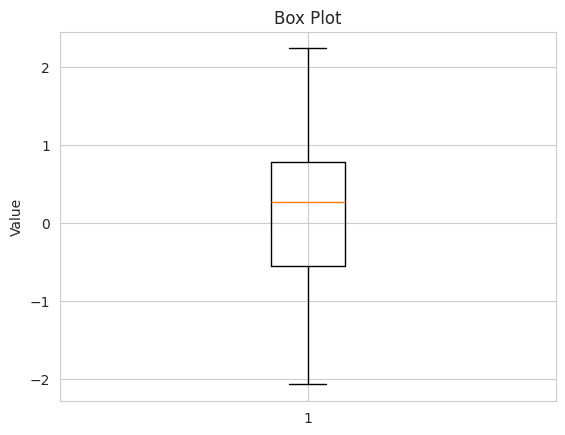
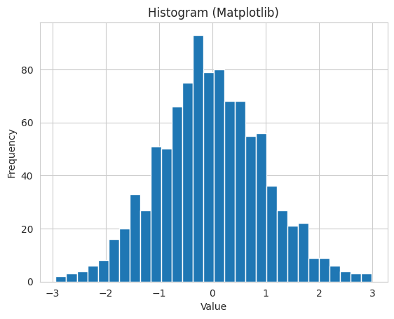
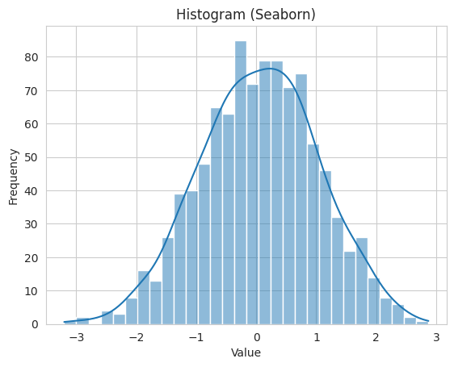
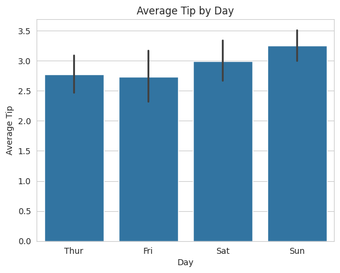
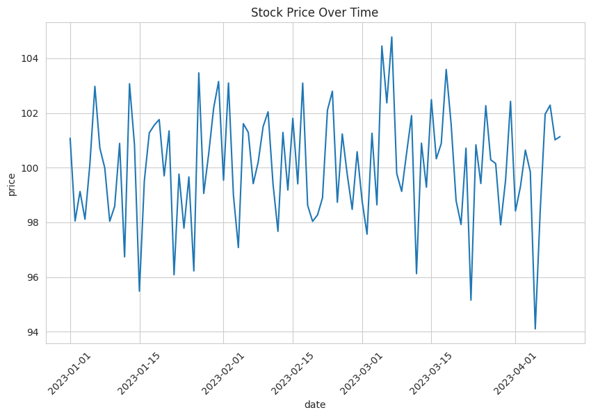

Data visualization is an indispensable tool in the field of data science. It serves as a powerful means to convey information, explore data, make informed decisions, and communicate results effectively. This notebook aims to provide an academic and comprehensive guide to visualizing data using Matplotlib and Seaborn, two fundamental libraries in data science.
Why Data Visualization Matters
Human beings possess an innate ability to process and understand visual information more efficiently than textual or numerical data. Visualization leverages this cognitive advantage, enabling us to:
Gain Insight: Visualizations can reveal patterns, trends, and outliers in data that might be elusive in raw numbers.
Simplify Complex Data: They simplify complex datasets, making them more comprehensible.
Tell a Story: Visualizations facilitate storytelling, making it easier to convey findings and insights to diverse audiences.
Getting Started with Matplotlib
In this section, we will delve into the fundamentals of Matplotlib, one of the most widely used Python libraries for data visualization. Matplotlib provides a versatile framework for creating a wide range of static and animated plots, making it an indispensable tool for data scientists and students in the field of computer science and data science. We will cover several essential plot types with detailed end-to-end examples to help you grasp the concepts and practices effectively.
Basic Line Plot
A line plot is a fundamental type of visualization that is used to represent data points as a series of connected line segments. It is particularly useful for visualizing trends or patterns in data.
Let’s create a simple line plot using Matplotlib with end-to-end code and explanations:
import matplotlib.pyplot as plt# Sample datax = [1, 2, 3, 4, 5]y = [10, 15, 13, 18, 20]# Create a line plotplt.plot(x, y)# Adding labels and titleplt.xlabel('X-axis')plt.ylabel('Y-axis')plt.title('Simple Line Plot')# Display the plotplt.show()
In this example, we import Matplotlib, define sample data for the x and y coordinates, create a line plot using plt.plot(), add labels and a title for clarity, and finally, display the plot using plt.show().
Scatter Plot
Scatter plots are effective for visualizing the relationship between two variables, making them ideal for data exploration and analysis. Each data point is represented as a dot on the plot.
Here’s an end-to-end example of creating a scatter plot:
import matplotlib.pyplot as plt# Sample datax = [1, 2, 3, 4, 5]y = [10, 15, 13, 18, 20]# Create a scatter plotplt.scatter(x, y)# Adding labels and titleplt.xlabel('X-axis')plt.ylabel('Y-axis')plt.title('Scatter Plot')# Display the plotplt.show()
In this case, we use plt.scatter() to create a scatter plot, with the same labeling and title setup as before.
Bar Chart
Bar charts are an effective way to compare categories or discrete data points. They visually represent data using rectangular bars, with the length of each bar corresponding to the value of the data it represents.
Here’s how you can create a bar chart from scratch:
import matplotlib.pyplot as plt# Sample datacategories = ['A', 'B', 'C', 'D']values = [30, 50, 20, 40]# Create a bar chartplt.bar(categories, values)# Adding labels and titleplt.xlabel('Categories')plt.ylabel('Values')plt.title('Bar Chart')# Display the plotplt.show()
In this example, we use plt.bar() to create a bar chart, customize it with labels and a title, and finally, display the chart.
Histogram
Histograms are essential for visualizing the distribution of a dataset, particularly in cases where the data’s frequency distribution is of interest.
Here’s an end-to-end example of creating a histogram:
import matplotlib.pyplot as pltimport numpy as np# Generate random datadata = np.random.normal(0, 1, 1000)# Create a histogramplt.hist(data, bins=30)# Adding labels and titleplt.xlabel('Value')plt.ylabel('Frequency')plt.title('Histogram')# Display the plotplt.show()
In this case, we use plt.hist() to create a histogram, where we first generate random data using NumPy, specify the number of bins for the histogram, and add labels and a title.
Box Plot
Box plots are excellent for visualizing the distribution and spread of data, helping to identify outliers and assess the central tendency and variability of a dataset.
Here’s an example of creating a box plot:
import matplotlib.pyplot as pltimport numpy as np# Generate random datadata = np.random.normal(0, 1, 100)# Create a box plotplt.boxplot(data)# Adding labels and titleplt.ylabel('Value')plt.title('Box Plot')# Display the plotplt.show()

In this example, we use plt.boxplot() to create a box plot, generate random data for illustration, and include labels and a title.
Pie Chart
Pie charts are effective for displaying the proportion of different categories within a dataset. They are particularly useful for illustrating data in a way that emphasizes the relationship between parts and the whole.
Here’s how to create a pie chart with Matplotlib:
import matplotlib.pyplot as plt# Sample datalabels ='Category A', 'Category B', 'Category C', 'Category D'sizes = [15, 30, 45, 10]# Create a pie chartplt.pie(sizes, labels=labels, autopct='%1.1f%%')# Adding titleplt.title('Pie Chart')# Display the plotplt.show()
In this case, we use plt.pie() to create a pie chart, specify the labels and sizes of the categories, and include a title for clarity.
These examples demonstrate how to create various types of plots using Matplotlib, from basic line plots to more complex charts like histograms and pie charts. Matplotlib provides extensive customization options to tailor your visualizations to your specific needs.
Enhancing Visualizations with Seaborn
Seaborn is a powerful Python library that builds on Matplotlib and offers a high-level interface for creating informative and aesthetically pleasing statistical visualizations. In this section, we will delve into Seaborn’s capabilities and explore various aspects of enhancing data visualizations using this library. We will provide comprehensive end-to-end examples for each subtopic to illustrate how Seaborn can be employed effectively.
Seaborn vs. Matplotlib
Understanding the Distinction
Before diving into Seaborn, it’s essential to understand the key differences between Seaborn and Matplotlib. While Matplotlib is a versatile but somewhat low-level library for creating plots, Seaborn is designed for statistical data visualization and offers:
Simplified syntax and concise API.
Built-in themes and color palettes for better aesthetics.
Specialized functions for creating complex plots with minimal code.
Example: Comparing Matplotlib and Seaborn
Let’s illustrate the difference with a basic example. We’ll create a * simple histogram using both Matplotlib and Seaborn.
Matplotlib:
import matplotlib.pyplot as pltimport numpy as npdata = np.random.normal(0, 1, 1000)plt.hist(data, bins=30)plt.xlabel('Value')plt.ylabel('Frequency')plt.title('Histogram (Matplotlib)')plt.show()

Seaborn:
import seaborn as snsimport numpy as npdata = np.random.normal(0, 1, 1000)sns.histplot(data, bins=30, kde=True)plt.xlabel('Value')plt.ylabel('Frequency')plt.title('Histogram (Seaborn)')plt.show()

In this example, Seaborn simplifies the creation of a histogram with an optional kernel density estimation (KDE) curve, enhancing both readability and aesthetics.
Seaborn’s Datasets
Seaborn comes with several built-in datasets that are useful for practice and experimentation. These datasets cover a wide range of scenarios and are readily available for analysis and visualization.
Let’s load the famous iris dataset provided by Seaborn and create a pair plot to explore the relationships between the features.
import seaborn as sns# Load the iris datasetiris = sns.load_dataset("iris")# Create a pair plot for exploring feature relationshipssns.pairplot(iris, hue="species")# Display the plotplt.show()
In this example, we load the “iris” dataset and use Seaborn to create a pair plot that visualizes the relationships between the various species of iris flowers. The hue parameter allows us to distinguish different species with color.
Seaborn Styles
Seaborn provides various built-in styles to improve the aesthetics of your plots. You can easily set the style using the sns.set_style() function.
Let’s change the plotting style using Seaborn’s built-in styles and visualize the same data with different styles.
import seaborn as sns# Load the tips datasettips = sns.load_dataset("tips")# Create a violin plot with different stylessns.set_style("darkgrid")sns.violinplot(x="day", y="total_bill", data=tips, hue="day", palette="Set1", inner="stick", split=True, legend=False)plt.title('Violin Plot with "darkgrid" Style')# Display the plotplt.show()
# Change the style to "whitegrid"sns.set_style("whitegrid")sns.violinplot(x="day", y="total_bill", data=tips, hue="day", palette="Set1", inner="stick", split=True, legend=False)plt.title('Violin Plot with "whitegrid" Style')# Display the plotplt.show()
In this example, we change the plotting style from “darkgrid” to “whitegrid” and visualize the same data using a violin plot. Seaborn’s styles offer visual diversity to suit your preferences and the context of your data.
Categorical Plots
Seaborn offers a range of categorical plots for data exploration. These plots are particularly useful when dealing with categorical or discrete data. We’ll demonstrate the creation of a bar plot to visualize the average tips given by day.
Let’s use Seaborn to create a bar plot that shows the average tips given on different days of the week.
import seaborn as snsimport matplotlib.pyplot as plt# Load the tips datasettips = sns.load_dataset("tips")# Create a bar plot to visualize the average tips by daysns.barplot(x="day", y="tip", data=tips)# Adding labels and titleplt.xlabel('Day')plt.ylabel('Average Tip')plt.title('Average Tip by Day')# Display the plotplt.show()

In this example, we use Seaborn’s barplot function to create a bar plot that displays the average tips given on different days. The ci parameter is set to None to remove confidence intervals.
Pair Plots
Pair plots are an excellent tool for visualizing relationships between variables in a dataset. They provide a quick overview of how features are related to each other.
Let’s create a pair plot to visualize the relationships between different numerical features in the iris datas
import seaborn as sns# Load the iris datasetiris = sns.load_dataset("iris")# Create a pair plot to explore feature relationshipssns.pairplot(iris, hue="species")# Display the plotplt.show()
In this example, we use Seaborn’s pairplot function to create a pair plot that illustrates how different species of iris flowers are related based on features like sepal length, sepal width, petal length, and petal width. The hue parameter allows us to distinguish different species with color.
Heatmaps
Heatmaps are ideal for displaying relationships between data points. They are particularly useful for visualizing correlations between variables.
Let’s create a heatmap to visualize the correlation matrix of the “tips” dataset, which shows how different numerical features are correlated.
import seaborn as snsimport pandas as pdimport matplotlib.pyplot as plt# Encode categorical variablestips_encoded = pd.get_dummies(tips, columns=["sex", "smoker", "day", "time"])# Create a correlation matrixcorrelation_matrix = tips_encoded.corr()# Create a heatmapplt.figure(figsize=(10, 6))sns.heatmap(correlation_matrix, annot=True)# Display the plotplt.show()
In this example, we calculate the correlation matrix of the “tips” dataset and use Seaborn to create a heatmap that visualizes the correlations between features. The annot parameter is set to True to display the correlation values on the heatmap.
FacetGrid
FacetGrid in Seaborn allows you to create a grid of subplots based on the values of one or more variables. It is useful for visualizing relationships in subgroups of data.
Let’s create a FacetGrid to visualize the relationship between the total bill and tip, differentiating by the time of day and whether the customer is a smoker.
import seaborn as sns# Create a FacetGridg = sns.FacetGrid(tips, col="time", row="smoker")# Map a scatter plot to the gridg.map(sns.scatterplot, "total_bill", "tip")# Display the plotplt.show()
In this example, we use a FacetGrid to create a grid of scatter plots. The FacetGrid is segmented by the time of day (lunch or dinner) and whether the customer is a smoker or not. This allows us to explore the relationship between the total bill and tip for different subsets of the data.
Seaborn’s capabilities extend far beyond what is covered in this section. It is a versatile library that empowers data scientists to create visually appealing and informative visualizations with ease. Experiment with Seaborn to discover its full potential and enhance your data analysis and presentation.
Real-World Data Visualization Examples
Exploratory Data Analysis (EDA)
Exploratory Data Analysis (EDA) is the initial phase of data analysis where we aim to understand the dataset’s structure, detect anomalies, and identify initial trends. Visualization is a key component of EDA. Let’s consider a real-world dataset, the “Iris” dataset, and perform EDA using Seaborn.
Load the Dataset:
We start by loading the Iris dataset, a classic dataset in data science, which contains measurements of three different species of iris flowers: setosa, versicolor, and virginica.
import seaborn as sns# Load the Iris datasetiris = sns.load_dataset("iris")
Univariate Analysis:
We can begin by visualizing the distribution of a single variable. For instance, let’s create a histogram to understand the distribution of petal lengths for all three species:
import seaborn as snsimport matplotlib.pyplot as plt# Create a histogramsns.histplot(data=iris, x="petal_length", hue="species")plt.title("Petal Length Distribution by Species")plt.show()
This histogram provides insights into the petal length distribution for each species.
Bivariate Analysis:
Bivariate analysis helps in understanding relationships between two variables. We can create a pair plot to visualize pairwise relationships between numeric variables:
import seaborn as sns# Create a pair plotsns.pairplot(iris, hue="species")
The pair plot shows scatterplots for all possible pairs of numeric features and provides a quick overview of how variables relate to each other.
Multivariate Analysis:
For a more comprehensive view, we can use a heatmap to visualize the correlation between numeric features:
import seaborn as snsimport matplotlib.pyplot as plt# Filter the DataFrame to include only numeric columnsnumeric_columns = iris.select_dtypes(include=['float64'])# Create a correlation matrixcorr_matrix = numeric_columns.corr()# Create a heatmapsns.heatmap(corr_matrix, annot=True)plt.title("Correlation Heatmap")plt.show()
The heatmap visually represents the correlation between different features. This can be especially helpful when dealing with high-dimensional datasets.
Time Series Data Visualization
Time series data often involves data points recorded at regular intervals, such as stock prices over time. Let’s visualize stock price data for a hypothetical company using Seaborn.
Load the Time Series Data:
We’ll create a dataset with timestamps and stock prices for a fictional company:
import seaborn as snsimport matplotlib.pyplot as pltimport pandas as pddata = {'date': pd.date_range(start='2023-01-01', periods=100, freq='D'),'price': 100+2* np.random.randn(100)}stock_data = pd.DataFrame(data)
Visualize Stock Prices Over Time:
Next, we can create a line plot to visualize how the stock price of the company changes over time:
# Create a line plotplt.figure(figsize=(10, 6))sns.lineplot(x="date", y="price", data=stock_data)plt.title("Stock Price Over Time")plt.xticks(rotation=45)plt.show()

This line plot provides a visual representation of how the stock price fluctuates over the specified time period.
Geographic Data Visualization
Visualizing geographic data is crucial when working with location-based information. Let’s consider a simple example of visualizing cities on a map.
Prepare Geographic Data:
Suppose you have a dataset with information about cities, including their names, latitudes, and longitudes.
To visualize these cities on a map, you can use libraries like Folium or geospatial data visualization tools. Here’s a simplified example using Folium:
import folium# Create a map object centered on the United Statesm = folium.Map(location=[37.0902, -95.7129], zoom_start=4)# Add markers for each cityfor index, row in cities_data.iterrows(): folium.Marker([row['Latitude'], row['Longitude']], popup=row['City']).add_to(m)# Display the mapm
Make this Notebook Trusted to load map: File -> Trust Notebook
This code generates a map with markers representing the cities’ locations.
Advanced Plots for Correlation Analysis
For advanced correlation analysis, Seaborn provides various plots. Let’s consider a scenario where we want to explore the correlation between features in a real-world dataset.
Load the Dataset:
We can load a dataset that contains numeric variables to analyze their correlation. For example, we can use Seaborn’s built-in “diamonds” dataset:
import seaborn as sns# Load the Diamonds datasetdiamonds = sns.load_dataset("diamonds")
Create Advanced Correlation Plots:
Seaborn offers advanced plots for correlation analysis. For instance, we can create a pair plot with regression lines to understand relationships between numeric features, considering factors like carat, cut, and price:
import seaborn as sns# Create a pair plot with regression linessns.pairplot(diamonds, vars=['carat', 'price'], hue='cut', kind='reg')
This pair plot provides insights into how carat, price, and cut are correlated.
These examples demonstrate how to apply data visualization techniques to real-world scenarios, such as exploratory data analysis, time series data, geographic data, and advanced correlation analysis. Effective visualization is essential for gaining insights and making data-driven decisions in data science and analysis.
Interactive Visualizations
In the world of data science, static visualizations are undeniably powerful for understanding and communicating insights. However, there are times when you need to take your data visualization to the next level by making it interactive. Interactive visualizations allow users to explore data on their terms, providing a dynamic and engaging experience. In this section, we will explore two prominent libraries for creating interactive visualizations: Plotly and Dash, and Bokeh.
Plotly: A Brief Introduction
Plotly is a versatile library for creating interactive, web-based visualizations. It supports a wide range of chart types and is known for its user-friendly API. Here’s an end-to-end example of creating an interactive line plot using Plotly:
import plotly.express as px# Sample dataimport pandas as pddata = pd.DataFrame({'X': [1, 2, 3, 4, 5],'Y': [10, 15, 13, 18, 20]})# Create an interactive line plotfig = px.line(data, x='X', y='Y', title='Interactive Line Plot')fig.show()
Unable to display output for mime type(s): application/vnd.plotly.v1+json
In this example, we use Plotly Express to create a line plot from a pandas DataFrame. The resulting plot is interactive, allowing users to zoom, pan, and hover over data points for more information.
Dash: Building Interactive Web Applications
Dash is a framework built on top of Plotly that enables you to create interactive web applications for data visualization. Dash allows you to build interactive dashboards, data exploration tools, and more. Here’s a simple example of a Dash web application that displays a dynamic line plot:
import dashfrom dash import dccfrom dash import htmlfrom dash.dependencies import Input, Outputimport pandas as pdimport plotly.graph_objs as go# Sample datadata = pd.DataFrame({'X': [1, 2, 3, 4, 5], 'Y': [10, 15, 13, 18, 20]})# Create a Dash web applicationapp = dash.Dash(__name__)app.layout = html.Div([ html.H1('Interactive Dash Line Plot'), dcc.Graph(id='line-plot'),])@app.callback( Output('line-plot', 'figure'), [Input('line-plot', 'relayoutData')])def update_line_plot(relayoutData):# Your data processing logic here fig = go.Figure() fig.add_trace(go.Scatter(x=data['X'], y=data['Y'], mode='lines')) fig.update_layout(title='Interactive Line Plot')return figif__name__=='__main__':# app.run_server(debug=True) # Uncomment this line to run the serverpass
In this example, we create a Dash web application that renders an interactive line plot. Users can interact with the plot, and any changes they make are reflected dynamically. Dash provides extensive capabilities for building custom, interactive data applications.
Bokeh
Bokeh is another library for creating interactive visualizations. It is designed for constructing interactive plots, dashboards, and applications in Python. Bokeh offers a high level of interactivity and customization. Here’s an example of creating an interactive scatter plot with Bokeh:
from bokeh.plotting import figure, output_notebook, showfrom bokeh.models import ColumnDataSource, HoverToolimport pandas as pd# Output the plot to the Jupyter Notebookoutput_notebook()# Sample datadata = pd.DataFrame({'X': [1, 2, 3, 4, 5], 'Y': [10, 15, 13, 18, 20]})# Create a Bokeh figurep = figure(title="Interactive Scatter Plot", tools="pan,box_zoom,reset,hover")# Add data sourcesource = ColumnDataSource(data=data)# Create a scatter plotscatter = p.circle(x='X', y='Y', source=source, size=10)# Add hover tool for interactivityhover = HoverTool()hover.tooltips = [("X", "@X"), ("Y", "@Y")]p.add_tools(hover)# Show the plot within the Jupyter Notebookshow(p, notebook_handle=True)
Loading BokehJS ...
<Bokeh Notebook handle for In[28]>
In this Bokeh example, we create an interactive scatter plot with a hover tool that displays data values when hovering over data points. Bokeh provides a wide range of interactive tools and widgets to enhance your visualizations.
Interactive visualizations with Plotly, Dash, and Bokeh open up exciting possibilities for data exploration, analysis, and presentation. They allow users to dive deeper into the data and interact with visualizations in a way that static plots cannot achieve. Whether you need to build interactive dashboards, explore complex datasets, or create dynamic reports, these libraries are valuable tools in your data science toolkit.
Customizing and Styling Plots
Customizing and styling plots is a critical aspect of data visualization that significantly enhances the clarity and aesthetics of your visualizations. In this section, we will explore three key subtopics:
Labels, Titles, and Legends
Color Palettes
Plot Annotations
We will provide detailed end-to-end examples for each subtopic to demonstrate their importance in creating informative and visually appealing data visualizations.
Labels, Titles, and Legends
Labels, titles, and legends are essential components of a well-structured data visualization. They provide context and help the audience understand the information presented. Let’s look at an example using Matplotlib:
import matplotlib.pyplot as plt# Sample datax = [1, 2, 3, 4, 5]y1 = [10, 15, 13, 18, 20]y2 = [5, 8, 6, 9, 10]# Create a line plot with labels and legendsplt.plot(x, y1, label='Series A')plt.plot(x, y2, label='Series B')# Adding labels, title, and legendplt.xlabel('X-axis')plt.ylabel('Y-axis')plt.title('Customizing Labels, Titles, and Legends')plt.legend()# Display the plotplt.show()
In this example, we have added labels to the x and y-axes, a title to the plot, and a legend to differentiate between two series. These components make the visualization self-explanatory.
Color Palettes
Choosing the right color palette is crucial for improving the visual appeal of your plots. Seaborn provides various color palettes to suit different types of data. Here’s an example using Seaborn:
import seaborn as snsimport matplotlib.pyplot as plt# Sample datadata = sns.load_dataset("iris")# Create a pair plot with a custom color palettecustom_palette = ['red', 'green', 'blue']sns.set_palette(custom_palette)sns.pairplot(data, hue='species')# Adding a titleplt.suptitle('Custom Color Palette for Pair Plot', y=1.02)# Display the plotplt.show()
In this example, we’ve selected a custom color palette to style a pair plot, making it visually appealing and distinctive. Seaborn’s palettes offer a wide range of choices to fit the tone and theme of your visualizations.
Plot Annotations
Annotations are valuable for highlighting specific data points or features within your visualizations. They improve interpretability and guide the viewer’s attention. Here’s an example using Matplotlib:
import matplotlib.pyplot as plt# Sample datax = [1, 2, 3, 4, 5]y = [10, 15, 13, 18, 16]# Create a line plotplt.plot(x, y)# Adding labels and titleplt.xlabel('X-axis')plt.ylabel('Y-axis')plt.title('Plot with Annotations')# Annotating a data pointplt.annotate('Peak Value', xy=(4, 18), xytext=(4.1, 16), arrowprops=dict(facecolor='black', shrink=0.05))# Display the plotplt.show()
In this example, we’ve added an annotation to highlight a specific data point in the plot. Annotations can be used to provide additional context or emphasize key findings.
Customizing and styling plots not only enhances the aesthetics but also aids in conveying your data-driven message effectively. These techniques are valuable in creating professional and informative data visualizations.
Conclusion
In conclusion, data visualization plays a pivotal role in data science, enabling data practitioners to explore, analyze, and communicate their findings effectively. This notebook has provided a comprehensive overview of data visualization using Matplotlib and Seaborn, from basic plots to advanced techniques. We encourage you to practice and apply your knowledge to real-world projects, as data visualization is an essential skill for any data scientist or analyst.